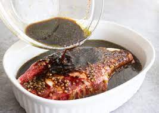

steak marinade

Description
This easy steak marinade is great for rib steaks but can be used for almost any cut of beef.
Ingredient
- ¼ cup olive oil
- ¼ cup balsamic vinegar
- ¼ cup Worcestershire sauce
- ¼ cup soy sauce
- 2 teaspoons Dijon mustard
- 2 teaspoons minced garlic
- 1 pinch salt and pepper to taste
Steps
- Mix olive oil, balsamic vinegar, Worcestershire sauce, soy sauce, Dijon mustard, and garlic in a small bowl. Season with salt and pepper.